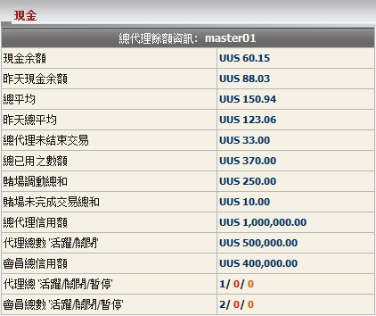

現金
定義:
這是個總體報告幫助總代理了解他/她目前的餘額, 輸贏數額, 支付及收取的數額。

現金
用詞註解:
-
現金餘額: 目前總代理包括轉賬交易輸贏總額。
- 昨天現金餘額: 總代理輸贏總額至昨日。
- 總平均: 總代理需要與上線結算的支付或收取的總數額。
- 昨天總平均: 總代理需要與上線結算的支付或收取的總數額至昨日。
- 總代理未結束交易: 總代理根據他/她的佔成, 在會員投注額的分擔於進行中/等待中的注單。
- 未完成交易總數: 會員投注總額於進行中/等待中的注單包括娛樂城轉移金額。
- 賭場調動總和: 會員從體育博彩轉移至娛樂城的總額。
- 賭場未完成交易總和: 會員投注總額於待續娛樂城遊戲 (此數值只出現在會員將金額調回體育博彩)。
- 總代理信用額: 上線給予總代理的總信用額。
- 代理總信用額: 給予代理的總信用額。
- 會員總信用額: 從屬該總代理給予所有會員的總信用額。
- 代理總數 "活躍/關閉/暫停": 代理數量為活躍/關閉或暫停。
- 會員總數 "活躍/關閉/暫停": 會員數量為活躍/關閉或暫停。
如何理解報告:
- 現金餘額 = 60.15是指總代理目前的贏額為60.15.
- 昨天現金餘額 = 88.03是直至昨日的贏額為88.03.
- 總餘額 = 150.94 指總代理將收到上線的 150.94.
- 昨天總餘額 = 123.06 是指昨日總代理將收上線 123.06.
- 總代理未結束交易 = 33是指總代理從所有進行中/等待中的注單可能收到的最高數額為33.
- 未完成交易總數 = 370是指所有會員目前的投注總額於進行中/等待中的注單包括娛樂城轉移金額為370.
- 賭場調動總和 = 250是指會員從體育博彩轉移至娛樂城的總額為250.
- 賭場未完成交易總和 = 10是指會員留下10於待續娛樂城遊戲.
- 總代理信用額 = 1,000,000是指最初上線給予總代理1,000,000.
- 代理總信用額 = 500,000是指總代理給予其所有代理的總信用額.
- 會員總信用額 = 400,000是指從屬master01給予所有會員的總信用額.
- 代理總數 "活躍/關閉/暫停" = 1/0/0 是指此總代理有1活躍/ 0關閉/ 0暫停的代理.
- 會員總數 "活躍/關閉/暫停" = 2/0/0 是指此總代理有2活躍/ 0關閉/ 0暫停的會員.